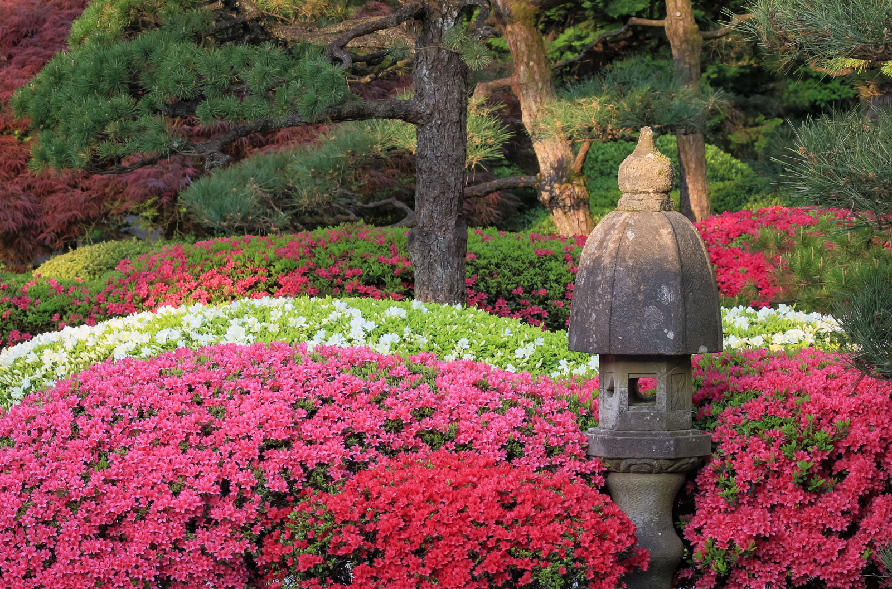
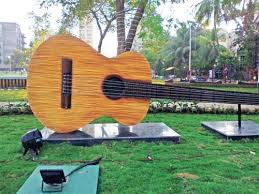
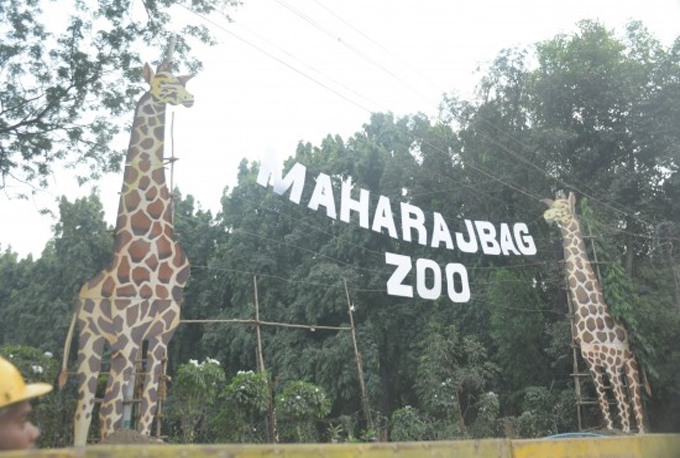
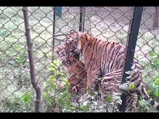

Best Fun Places In The City


The lake also has a garden located just beside it known as Ambazari garden. The garden was established in 1958 on an area of 18 acres of land.This place is managed and preserved by the Nagpur Municipal Corporation. The musical fountain, various electric rides, and amusement games were once present in the garden but have been discontinued. The garden is frequented by walkers in the morning and, in the afternoon, it turns into couple spot. Radio speakers were added in the park, which plays soothing music and green gym. This is one of the famous tourist attractions of Nagpur.


Umred-Pauni-Karhandla Wildlife Sanctuary, about 58 km from Nagpur and 60 km from Bhandara, is spread over Pauni Tahsil of Bhandara district and Umred, Kuhi and Bhivapur Taluka of Nagpur district. This sanctuary has a connection with Tadoba Andhari Tiger Reserve through the forest along Wainganga river. The sanctuary is home to resident breeding tigers, herds of Gaur, wild dogs and rare animals like flying squirrels, pangolins and honey badgers. It is bounded roughly by the Wainganga river and the Gose Khurd Dam on the northeast, State Highway 9 and Bhiwapur Town on the south, Umred on the west and a narrow 10 km long range of 600 - 800 m hills to the northwest. It is located 40 km north of Tadoba-Andhari Tiger Reserve and 50 km southwest of Nagzira Wildlife Sanctuary & 60 km from Nagpur, Maharashtra. Pench Tiger Reserve is 80 km to the northwest The number of tourists is increasing because it is very close to the Umred and Nagpur city. Tigers are commonly seen here by many villages around the sanctuary.



A botanical garden or botanic garden is a garden dedicated to the collection, cultivation, preservation and display of a wide range of plants labelled with their botanical names. It may contain specialist plant collections such as cacti and other succulent plants, herb gardens, plants from particular parts of the world, and so on; there may be greenhouses, shadehouses, again with special collections such as tropical plants, alpine plants, or other exotic plants. Visitor services at a botanical garden might include tours, educational displays, art exhibitions, book rooms, open-air theatrical and musical performances, and other entertainment.
Botanical gardens are often run by universities or other scientific research organizations, and often have associated herbaria and research programmes in plant taxonomy or some other aspect of botanical science. In principle, their role is to maintain documented collections of living plants for the purposes of scientific research, conservation, display, and education, although this will depend on the resources available and the special interests pursued at each particular garden.



The Lata Mangeshkar Musical Garden is located 7.5 kms east of Nagpur in Surya Nagar. Built under the guidance of Jaiprakash Gupta, a trustee of NIT, this is a popular tourist attraction.
The main attraction of this lawn garden is the musical fountain, which attracts many tourists. The landscape is beautiful with the attractive musical fountain, themed with different musical notes and tunes, operated by musicians. Besides, the Lata Mangeshkar garden also comprises of a grand open air auditorium which can accommodate about 2500 people. Weather: Summer 27C to 49C Winter 10C to 30C


Numerous exhibitions, fairs and political meetings, Kasturchand Park has seen it all! But very few know the history behind this historic ground of Nagpur.
Kasturchand Park: Daga family's gift to this incredible city
About a century ago, Daga family, originally hailing from Bikaner, Rajasthan moved to Nagpur. The Dagas, despite being an industrial family, were known for their philanthropy. Named after well renowned Sir Kasturchand Daga, the ground was donated for the benefit of Nagpurkars. Sir Kasturchand Daga was a successful entrepreneur who had started many industries in and around Nagpur. His wifei was the driving force behind establishing Nagpur's women only "LAD college".
What makes it special?
Over the years, Kasturchand Park's importance has increased, thanks to the political and non-political gatherings that have taken place here. Even though it is one of the biggest grounds of Nagpur, what sets it apart is the bandstand that stands right in the middle of the ground. Daga family's roots can be one of the reasons for this Rajasthani influence.


